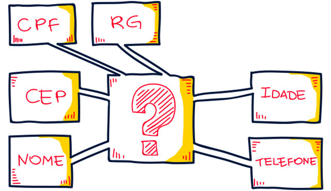

A Lei Geral de Proteção de Dados (LGPD) é uma legislação brasileira que visa garantir a privacidade e a integridade dos dados pessoais dos usuários. Ela entrou em vigor em setembro de 2020 e impacta diretamente o desenvolvimento de sistemas e aplicativos.
A LGPD considera como dados pessoais informações que permitem identificar ou localizar uma pessoa, como nome, CPF, telefone e profissão.
Além disso, existem os dados pessoais sensíveis, que incluem informações como opinião política, orientação sexual, crença religiosa, biometria e outros.
Programadores devem estar cientes de que até mesmo dados pessoais em papel (como relatórios impressos) estão sujeitos à LGPD.
A lei abrange todos os sistemas: back-end, front-end e mobile.
Qualquer operação realizada sobre dados pessoais é considerada tratamento de dados e está sujeita à LGPD. Isso inclui coleta, processamento, armazenamento, eliminação, entre outras operações.
A LGPD exige que a segurança de dados seja incorporada desde o design até a manutenção dos sistemas. Programadores devem implementar medidas robustas para proteger os dados pessoais, evitando multas e riscos legais.
Empresas que não se adequam à LGPD podem sofrer multas significativas. A LGPD é inspirada no Regulamento Geral sobre a Proteção de Dados (GDPR) da União Europeia e busca promover a ética e a privacidade no tratamento de dados.

A Lei Geral de Proteção de Dados (LGPD) representa um marco legal crucial no Brasil, estabelecendo regras claras para a coleta, o uso, o armazenamento e a proteção de dados pessoais. Essa legislação, que tem como objetivo garantir a privacidade dos indivíduos, impacta diretamente a forma como os desenvolvedores web concebem e implementam suas aplicações.
Na prática da programação web, a LGPD exige uma mudança de paradigma. Os desenvolvedores devem ter em mente que os dados que coletam são valiosos e, ao mesmo tempo, devem ser tratados com o máximo cuidado. Isso significa que a coleta de dados deve ser limitada ao estritamente necessário, com o consentimento explícito do usuário. Além disso, os dados coletados devem ser armazenados de forma segura, protegidos contra acessos não autorizados e utilizados apenas para as finalidades informadas ao usuário no momento da coleta.
A transparência é outro pilar fundamental da LGPD. Os desenvolvedores devem informar aos usuários quais dados estão sendo coletados, como esses dados serão utilizados e por quanto tempo serão armazenados. Essa informação deve ser apresentada de forma clara e concisa, em linguagem acessível a todos.
A LGPD também impõe a necessidade de implementar mecanismos que permitam aos usuários exercerem seus direitos, como o direito de acesso, o direito de retificação e o direito de exclusão dos seus dados. Isso significa que os desenvolvedores devem criar interfaces intuitivas que permitam aos usuários consultar, corrigir ou apagar seus dados pessoais a qualquer momento.
Em resumo, a LGPD traz diversas implicações para a programação web:
Ao adotar as medidas previstas na LGPD, os desenvolvedores web não apenas cumprem uma obrigação legal, mas também constroem soluções mais confiáveis e transparentes, fortalecendo a relação de confiança com seus usuários.